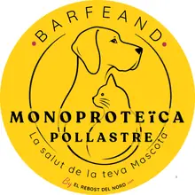
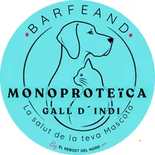
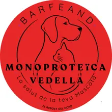
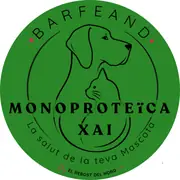
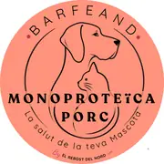
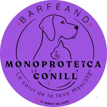
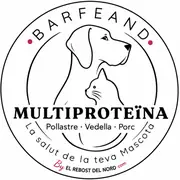

MonoproteínaPollo
4,45 €
8,90 €/kg · conservar a −18 °C
Ingredientes: Carne de pollo, carcasas, hígado, corazón y mollejas de pollo. Calabacín, zanahoria y manzana.
ComprarElaborado en Andorra
Naturalmente saludable, naturalmente BARF
Recetas crudas con carne, huesos, vísceras y verdura, preparadas en El Rebost del Nord.
La tienda

Monoproteína4,45 €
8,90 €/kg · conservar a −18 °C
Ingredientes: Carne de pollo, carcasas, hígado, corazón y mollejas de pollo. Calabacín, zanahoria y manzana.
Comprar

Monoproteína4,94 €
9,89 €/kg · conservar a −18 °C
Ingredientes: Carne de pavo, carcasas, hígado, corazón y mollejas de pavo. Calabacín, zanahoria y manzana.
Comprar

Monoproteína5,85 €
11,70 €/kg · conservar a −18 °C
Ingredientes: Carne de ternera, asaduras, corazón, riñón, hígado y cartílagos. Calabacín, zanahoria y manzana.
Comprar

Monoproteína9,15 €
18,30 €/kg · conservar a −18 °C
Ingredientes: Carne y huesos de cordero, asaduras, corazón, riñón, hígado y bazo. Calabacín, zanahoria y manzana.
Comprar

Monoproteína5,03 €
10,05 €/kg · conservar a −18 °C
Ingredientes: Carne de cerdo Duroc, huesos de cerdo, cartílagos, hígado, corazón y asaduras. Calabacín, zanahoria y manzana.
Comprar

Monoproteína7,25 €
14,51 €/kg · conservar a −18 °C
Ingredientes: Carne y huesos de conejo, corazón, riñones e hígado de conejo. Calabacín, zanahoria y manzana.
Comprar

MultiproteínaMejor precio4,20 €
8,40 €/kg · conservar a −18 °C
Ingredientes: Carne de pollo, ternera y cerdo, carcasas, hígado y corazón de cerdo, pollo y ternera. Calabacín, zanahoria y manzana.
ComprarCalcula cuánto necesita o pregúntanos por WhatsApp.
BARFEAND es comida natural cruda para perros y gatos. Naturalmente saludable, naturalmente BARF. Para una alimentación equilibrada, te recomendamos añadir los suplementos adecuados (como aceites ricos en omega 3) y consultar a tu veterinario.
Kit Iniciación BARF
¿Quieres pasar a tu perro a una alimentación natural pero no sabes por dónde empezar? El Kit Iniciación BARF lo pone fácil: te lo damos todo preparado para que el cambio sea sencillo, seguro y sin dudas.
Pollo o pavo, suaves y de fácil digestión, en formato de 500 g o de 1 kg para que raciones según tu perro.
El plan de 10 días para los casos en que conviene ir poco a poco: estómagos sensibles y razas pequeñas.
Descarga la guíaPDFDe ternera de Andorra, de nuestra propia carnicería.
Con Roser Borràs, nutricionista, etóloga y adiestradora canina, para resolver cualquier duda por el camino.
BARFEAND es comida natural cruda para perros y gatos. Para una alimentación equilibrada, te recomendamos añadir los suplementos adecuados (como aceites ricos en omega 3) y consultar a tu veterinario.
Calculadora
Indica su peso, su edad y su actividad: te decimos los gramos al día y cuántos paquetes necesitas para un mes.
También la tienes como app (en catalán): instálala en el móvil y úsala sin conexión.
Instalar la app en el móvilCómo funciona
Haz el pedido en la tienda online de El Rebost del Nord.
Pasa por la carnicería o recíbelo en casa, en las zonas de envío de Andorra.
Guárdalo a −18 °C y descongélalo siguiendo las indicaciones de la etiqueta.
Guías BARFEAND
Preguntas frecuentes
De pienso a comida real. Gracias por dar el paso hacia una alimentación más natural para tu perro. Esta guía te acompaña para que el cambio sea sencillo, seguro y sin complicaciones.
La dieta BARF se basa en ofrecer a tu perro alimentos frescos y reales, adaptados a su naturaleza. Beneficios que notarás con el tiempo:
Un hueso recreativo a la semana. Masticarlo le ayuda a liberar endorfinas, relajarse y fortalecer la musculatura de la mandíbula. Al comprar BARFEAND te regalamos los huesos recreativos con tu pedido: son de ternera de Andorra, de las mismas reses que trabajamos enteras en nuestra carnicería para elaborar el BARF.
Lo más habitual es cambiar de golpe: de un día para otro, la mayoría de perros adultos sanos pasan al BARF sin problemas. Puedes empezar con una ración algo más pequeña los primeros días.
Cuándo conviene ir poco a poco: en perros con el estómago sensible, en razas muy pequeñas de estómago delicado y en gatos, que suelen ser más reacios a los cambios, te recomendamos hacer el cambio en 10 días, mezclando pienso y BARF:
| Días | BARF | Pienso |
|---|---|---|
| 1 a 3 | 25 % | 75 % |
| 4 a 6 | 50 % | 50 % |
| 7 a 9 | 75 % | 25 % |
| 10 en adelante | 100 % | 0 % |
¿Puedo mezclar pienso y BARF en la misma toma? Si sigues el plan de 10 días, sí, durante esos días. Después, solo BARF.
¿Y si rechaza la comida nueva? Prueba a templar ligeramente la ración o haz el cambio poco a poco con el plan de 10 días. La paciencia es clave.
¿Cuándo introduzco nuevas proteínas? Cuando esté totalmente adaptado a la primera y con buenas digestiones, ve incorporando otras de forma gradual.
¿Cuánta cantidad debe comer al día? Calcúlala con nuestra calculadora BARF, según el peso, la edad y la actividad de tu perro.
Soy Roser Borràs, nutricionista, etóloga y adiestradora canina. Puedo acompañarte en este cambio de forma personalizada, uno a uno, resolviendo cualquier duda que surja por el camino. Escríbeme por WhatsApp o llámame al +376 678 536 y lo vemos juntos.
Los productos de esta gama deben conservarse congelados a −18 °C siguiendo las indicaciones de la etiqueta del paquete.
Todas las recetas BARFEAND están disponibles en formatos de 1 kg y 500 g.
Las recetas monoproteicas utilizan una sola especie animal. La multiproteína combina pollo, ternera y cerdo.
En línea en El Rebost del Nord, con las opciones de entrega o recogida que ofrece la tienda. También puedes encontrar BARFEAND en SÜNA, peluquería canina y felina y tienda especializada, en la avenida del Pessebre, 90, Escaldes-Engordany.
Nuestros colaboradores
Peluquería canina y felina y tienda especializada. Cuidado con calma, respeto y sin prisas.
Av. del Pessebre, 90 · AD700 Escaldes-Engordany